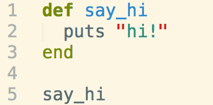
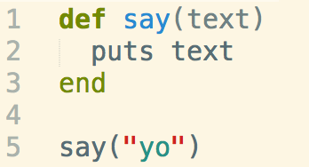
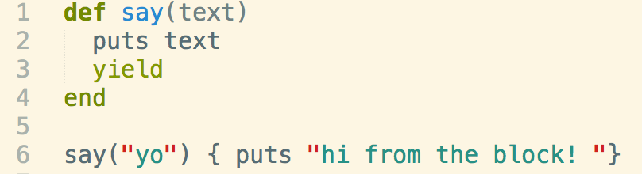
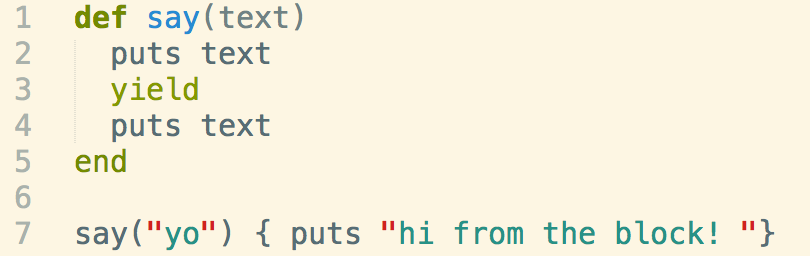
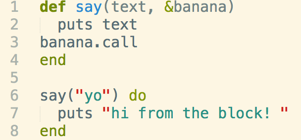
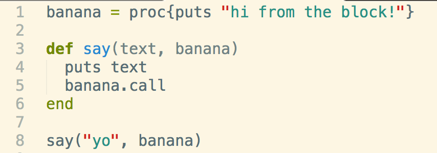
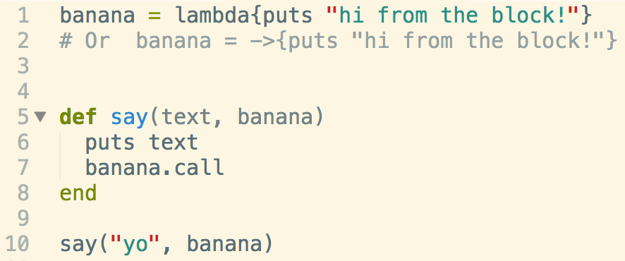
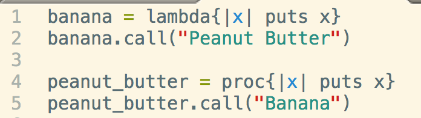

Snippets Of Code
To explain the differences of Block, Proc, and Lamda, it's important to first look at their similarities. B's, P's, and L's are snippets of code saved as data that can be executed. Let's take a look at a standard method call.
Here we have a standard method on lines 1-3. If we call the method on line 5, we should see an output of hi! If we wanted to include parameters in our method call, we would assign a parameter as we construct the method as seen below.
But what if I wanted to run a snippet of code like how all the cool methods do it on Ruby-Docs? Well that's when we would use yield
The formal definition of yield is something along the lines of giving control of the method over to the block, and the block is defined by being right next to the method call. So if we were to run this, we would get "yo" because of line 2, and then "hi from the block!" because of yield on line 3 and the block on line 6. What's important to note is that yield does not implicitly return, or in english, does not end running the rest of the code after yield. So if I had something like this:
I would see an output of "yo", then "hi from the block!", then "yo" again.
Procs
Now what if you want to name your block? You would put an ampersand in front of it! Procs are basically named blocks. Take a look at the example below. On line 1, we assign our block a name of &banana, and within the method itself, I am able to replace yield with banana.call.
What is the problem here? I assigned a name to my block inside my method parameter, so the scope of &banana is only the method say. If I wanted to use the proc in other methods, I need to assign the name to the snippit of code itself like so.
I got rid of the & and named my proc as banana on line 1. Now I can use this proc in any method by passing in my keyword as an extra parameter
Lamda
Lamdas are identical to Procs, but are created differently. Lets take a look.
Proc vs. Lambda
Lambda's care about arity/the number of arguments accepted.it also will return from the placement inside the method. So if you write a lambda that has a return, it won't throw an error.
Procs on the other hand will return from the place it's located at. Therefore if you create a proc that's not enclosed by a method and write in a return, it will throw an error since you are trying to return from main.
Other uses
Procs and Lambdas can also be created with placeholders and called by assigning parameters in the proc/lambda call.
Guard Clauses
To make sure that you don't throw an error when creating a method that takes a proc or lambda, make sure to write ____ if block_given? This will make the proc/lambda optional.